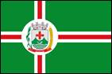
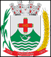

| Bandeira e Brasão de Armas |


|
| Origem do nome |
Na língua tupi-guarani, significa, rio pequeno. |
| Padroeira |
Santo Antônio |
| Legislação Ambiental Municipal |
Lei Nº 230 de 04 de abril de 2019, que institui a Política Municipal de Meio Ambiente. |
| Principais fontes de água |
- Barragem do Zabumbão
- Rio Paramirim
- Rio Riachão
- Riacho Catuaba
- Córrego da Caieira
- Riacho Conceição
- lagoa da Tábua
- lagoa de Caraíbas
- Nlagoa da Várzea Redonda
|
| Unidade de Conservação |
Áreas de Preservação Ambiental – APA: APA do Morro Branco – 470,00 hectares, APA da Canabrava – 572,90 hectares, APA da Pedra Branca – 193,72 hectares, APA da Pedra do Queixinho – 408,67 hectares, APA dos Pequiseiros – 187,55 hectares, APA do Morro de Santana – 1.349,00 hectares, APA da Barragem – 6.852,85 hectares e APA da Gameleira – 14.371,02 hectares, perfazendo um total de 24.405,71hectares. Criadas pela Lei N° 094/2011, de 03 de novembro de 2011, que dispõe sobre a implantação Das Áreas de Proteção Ambiental (APA), como se indica, e dá outras providências. |
| Principais fontes de energia renovável |
Energia Solar. |
| Empreendimentos minerários |
- Magnitos
- Gransena
- Guidoni
- Pedreiras do Brasil
- Cajugram
- Mineração Atlântica
- RED Granite duas áreas Saco dos Bois e Muquem
- Rocha Bahia duas áreas Periperi e Muquem
|
| Plano de Saneamento Básico |
Possui Plano de Gerenciamento de Resíduos Sólidos de Paramirim - 2014 e o Plano de Saneamento Básico está em fase de elaboração |
| Projetos de reciclagem |
Cooperativa Recicla Mais Paramirim |
| Descarte de lixo eletrônico |
Não possui. |
| Maiores impactos ambientais |
- Desmatamentos
- queimadas criminosas principalmente nos períodos de estiagem e poluição por lixo na área rural
|
| Conselhos municipais |
- Conselho Municipal da Área de Preservação Ambiental (APA)
- Conselho Municipal de Meio Ambiente
- Conselho Municipal de Desenvolvimento Sustentável
- Conselho Municipal de Acompanhamento e Controle Social do Fundo de Manutenção e Desenvolvimento da Educação Básica e de valorização dos profissionais da educação – conselho do FUNDEB
- Conselho Municipal de Assistência Social
- Conselho Municipal dos Direitos da Criança e do Adolescente
- Conselho Tutelar
- Conselho Municipal de Saúde
- Conselho Municipal de Educação
- Conselho Municipal do Idoso
- Conselho Municipal da Agricultura
- Conselho Municipal da Cultura
- Conselho Gestor do Lions Clube Vale do Paramirim
- Conselho Gestor da Pastoral da Criança
- Conselho Gestor da APAE
- Conselho de Alimentação Escolar
|
| Referências |
- INEMA - Instituto do Meio ambiente e Recursos Hídricos. Plano de Recursos Hídricos e da Proposta de Enquadramento dos Corpos de Água das Bacias Hidrográficas dos Rios Paramirim e Santo Onofre. Hydros Engeplus,2016.231 p.
- PARAMIRIM. Plano de Gerenciamento de Resíduos Sólidos de Paramirim.30 set. 2014. Disponível em: https://issuu.com/agecomprefeituradeparamirim/docs/diagn__stico_paramirim Acesso em:08, set 2023.
- RODRIGUES, S.143 Anos de Paramirim foram comemorados com a implantação da Cooperativa para reciclagem e inauguração de aterro controlado. O eco jornal.16, set 2021. Disponível em: https://oecojornal.com.br/143-anos-de-paramirim-foram-comemorados-com-a-implantacao-da-cooperativa-para-reciclagem-e-inauguracao-de-aterro-controlado/. Acesso em:07, set 2023.
|